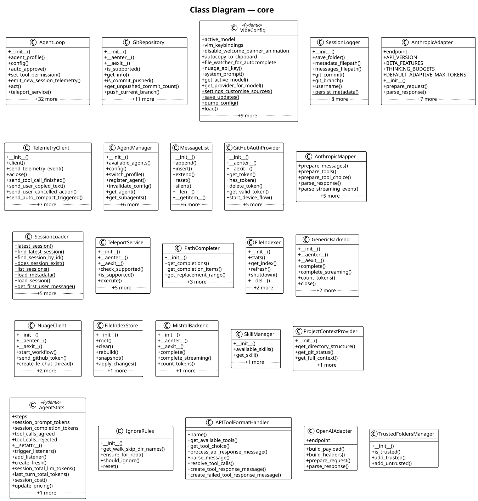

core¶
Core agent loop, configuration, LLM backends, middleware, and orchestration.
Overview¶
| Metric | Value |
|---|---|
| Modules | 58 |
| Classes | 158 |
| Functions | 72 |
| Total lines | 9,690 |
Class Diagram¶

Key Components¶
AgentLoop¶
Source: vibe/core/agent_loop.py#L142
| Method | Parameters | Returns | Description |
|---|---|---|---|
__init__() |
config, agent_name, message_observer, max_turns, max_price, backend, enable_streaming, entrypoint_metadata | None |
— |
agent_profile() |
AgentProfile |
— | |
config() |
VibeConfig |
— | |
auto_approve() |
bool |
— | |
set_tool_permission() |
tool_name, permission, save_permanently | None |
— |
emit_new_session_telemetry() |
None |
— | |
🔄 act() |
msg | AsyncGenerator[BaseEvent] |
— |
teleport_service() |
TeleportService |
— | |
teleport_to_vibe_nuage() |
prompt | AsyncGenerator[TeleportYieldEvent, TeleportPushResponseEvent | None] |
— |
set_approval_callback() |
callback | None |
— |
set_user_input_callback() |
callback | None |
— |
🔄 clear_history() |
None |
— | |
🔄 compact() |
str |
— | |
🔄 switch_agent() |
agent_name | None |
— |
🔄 reload_with_initial_messages() |
base_config, max_turns, max_price, reset_middleware | None |
— |
GitRepository¶
Source: vibe/core/teleport/git.py#L27
| Method | Parameters | Returns | Description |
|---|---|---|---|
__init__() |
workdir | None |
— |
🔄 __aenter__() |
GitRepository |
— | |
🔄 __aexit__() |
None |
— | |
🔄 is_supported() |
bool |
— | |
🔄 get_info() |
GitRepoInfo |
— | |
🔄 is_commit_pushed() |
commit, remote | bool |
— |
🔄 get_unpushed_commit_count() |
remote | int |
— |
🔄 push_current_branch() |
remote | bool |
— |
VibeConfig¶
Bases: BaseSettings
Source: vibe/core/config.py#L313
| Method | Parameters | Returns | Description |
|---|---|---|---|
nuage_api_key() |
str |
— | |
system_prompt() |
str |
— | |
get_active_model() |
ModelConfig |
— | |
get_provider_for_model() |
model | ProviderConfig |
— |
settings_customise_sources() |
cls, settings_cls, init_settings, env_settings, dotenv_settings, file_secret_settings | tuple[PydanticBaseSettingsSource, ...] |
Define the priority of settings sources. |
save_updates() |
cls, updates | None |
— |
dump_config() |
cls, config | None |
— |
load() |
cls | VibeConfig |
— |
create_default() |
cls | dict[str, Any] |
— |
SessionLogger¶
Source: vibe/core/session/session_logger.py#L32
| Method | Parameters | Returns | Description |
|---|---|---|---|
__init__() |
session_config, session_id | None |
— |
save_folder() |
Path |
— | |
metadata_filepath() |
Path |
— | |
messages_filepath() |
Path |
— | |
git_commit() |
str | None |
— | |
git_branch() |
str | None |
— | |
username() |
str |
— | |
🔄 persist_metadata() |
metadata, session_dir | None |
— |
🔄 persist_messages() |
messages, session_dir | None |
— |
🔄 save_interaction() |
messages, stats, base_config, tool_manager, agent_profile | None |
— |
reset_session() |
session_id | None |
Clear existing session info and setup a new session |
resume_existing_session() |
session_id, session_dir | None |
— |
cleanup_tmp_files() |
None |
Delete temporary files created more than 5 minutes ago | |
maybe_cleanup_tmp_files() |
None |
— |
AnthropicAdapter¶
Bases: APIAdapter
Source: vibe/core/llm/backend/anthropic.py#L318
| Method | Parameters | Returns | Description |
|---|---|---|---|
__init__() |
None |
— | |
prepare_request() |
PreparedRequest |
— | |
parse_response() |
data, provider | LLMChunk |
— |
TelemetryClient¶
Source: vibe/core/telemetry/send.py#L21
| Method | Parameters | Returns | Description |
|---|---|---|---|
__init__() |
config_getter | None |
— |
client() |
httpx.AsyncClient |
— | |
send_telemetry_event() |
event_name, properties | None |
— |
🔄 aclose() |
None |
— | |
send_tool_call_finished() |
None |
— | |
send_user_copied_text() |
text | None |
— |
send_user_cancelled_action() |
action | None |
— |
send_auto_compact_triggered() |
None |
— | |
send_slash_command_used() |
command, command_type | None |
— |
send_new_session() |
has_agents_md, nb_skills, nb_mcp_servers, nb_models, entrypoint, terminal_emulator | None |
— |
send_onboarding_api_key_added() |
None |
— |
AgentManager¶
Source: vibe/core/agents/manager.py#L22
| Method | Parameters | Returns | Description |
|---|---|---|---|
__init__() |
config_getter, initial_agent | None |
— |
available_agents() |
dict[str, AgentProfile] |
— | |
config() |
VibeConfig |
— | |
switch_profile() |
name | None |
— |
register_agent() |
profile | None |
— |
invalidate_config() |
None |
— | |
get_agent() |
name | AgentProfile |
— |
get_subagents() |
list[AgentProfile] |
— | |
get_agent_order() |
list[str] |
— | |
next_agent() |
current | AgentProfile |
— |
MessageList¶
Bases: Sequence[LLMMessage]
Source: vibe/core/types.py#L419
| Method | Parameters | Returns | Description |
|---|---|---|---|
__init__() |
initial, observer | None |
— |
append() |
msg | None |
— |
insert() |
i, msg | None |
— |
extend() |
msgs | None |
— |
reset() |
new | None |
Replace contents silently (never notifies). |
silent() |
Iterator[None] |
Context manager that suppresses notifications. | |
__len__() |
int |
— | |
__getitem__() |
index | LLMMessage |
— |
__getitem__() |
index | list[LLMMessage] |
— |
__getitem__() |
index | LLMMessage | list[LLMMessage] |
— |
__iter__() |
Iterator[LLMMessage] |
— | |
__contains__() |
item | bool |
— |
__bool__() |
bool |
— |
GitHubAuthProvider¶
Source: vibe/core/auth/github.py#L39
| Method | Parameters | Returns | Description |
|---|---|---|---|
__init__() |
client_id | None |
— |
🔄 __aenter__() |
GitHubAuthProvider |
— | |
🔄 __aexit__() |
exc_type, exc_val, exc_tb | None |
— |
get_token() |
str | None |
— | |
has_token() |
bool |
— | |
delete_token() |
None |
— | |
🔄 get_valid_token() |
str | None |
— | |
🔄 start_device_flow() |
open_browser | DeviceFlowHandle |
— |
🔄 wait_for_token() |
handle | str |
— |
AnthropicMapper¶
Shared mapper for converting messages to/from Anthropic API format.
Source: vibe/core/llm/backend/anthropic.py#L22
| Method | Parameters | Returns | Description |
|---|---|---|---|
prepare_messages() |
messages | tuple[str | None, list[dict[str, Any]]] |
— |
prepare_tools() |
tools | list[dict[str, Any]] | None |
— |
prepare_tool_choice() |
tool_choice | dict[str, Any] | None |
— |
parse_response() |
data | LLMChunk |
— |
parse_streaming_event() |
event_type, data, current_index | tuple[LLMChunk | None, int] |
— |
Design Patterns¶
- Protocol / Adapter — APIAdapter:
APIAdapterdefines a port with 2 adapter(s):AnthropicAdapter,OpenAIAdapter. - Template Method — OutputFormatter:
OutputFormatterdefines 3 abstract hook(s) (on_message_added,on_event,finalize) with 1 concrete method(s) providing the template. - Template Method — BaseTool:
BaseTooldefines 1 abstract hook(s) (run) with 9 concrete method(s) providing the template. - Template Method — ToolUIData:
ToolUIDatadefines 2 abstract hook(s) (get_result_display,get_status_text) with 4 concrete method(s) providing the template. - Factory — make_mock_remote():
make_mock_remote()intests.core.test_teleport_gitcreatesMagicMock. - Factory — make_mock_repo():
make_mock_repo()intests.core.test_teleport_gitcreatesMagicMock. - Factory — build_path_prompt_payload():
build_path_prompt_payload()invibe.core.autocompletion.path_promptcreatesPathPromptPayload. - Factory — VibeConfig.create_default():
VibeConfig.create_default()createsdict[str, Any]. - Factory — build_vertex_base_url():
build_vertex_base_url()invibe.core.llm.backend.vertexcreatesstr. - Factory — build_vertex_endpoint():
build_vertex_endpoint()invibe.core.llm.backend.vertexcreatesstr. - Factory — BackendErrorBuilder.build_http_error():
BackendErrorBuilder.build_http_error()createsBackendError. - Factory — BackendErrorBuilder.build_request_error():
BackendErrorBuilder.build_request_error()createsBackendError. - Factory — create_formatter():
create_formatter()invibe.core.output_formatterscreatesOutputFormatter. - Factory — get_current_proxy_settings():
get_current_proxy_settings()invibe.core.proxy_setupcreatesdict[str, str | None]. - Factory — SessionLoader.get_first_user_message():
SessionLoader.get_first_user_message()createsstr. - Factory — get_universal_system_prompt():
get_universal_system_prompt()invibe.core.system_promptcreatesstr. - Factory — BaseTool.get_tool_prompt():
BaseTool.get_tool_prompt()createsstr | None. - Factory — BaseTool.get_parameters():
BaseTool.get_parameters()createsdict[str, Any]. - Factory — BaseTool.get_name():
BaseTool.get_name()createsstr. - Factory — BaseTool.create_config_with_permission():
BaseTool.create_config_with_permission()createsBaseToolConfig. - Factory — AskUserQuestion.get_result_display():
AskUserQuestion.get_result_display()createsToolResultDisplay. - Factory — AskUserQuestion.get_status_text():
AskUserQuestion.get_status_text()createsstr. - Factory — Bash.get_result_display():
Bash.get_result_display()createsToolResultDisplay. - Factory — Bash.get_status_text():
Bash.get_status_text()createsstr. - Factory — Grep.get_result_display():
Grep.get_result_display()createsToolResultDisplay. - Factory — Grep.get_status_text():
Grep.get_status_text()createsstr. - Factory — ReadFile.get_result_display():
ReadFile.get_result_display()createsToolResultDisplay. - Factory — ReadFile.get_status_text():
ReadFile.get_status_text()createsstr. - Factory — SearchReplace.get_result_display():
SearchReplace.get_result_display()createsToolResultDisplay. - Factory — SearchReplace.get_status_text():
SearchReplace.get_status_text()createsstr. - Factory — Task.get_call_display():
Task.get_call_display()createsToolCallDisplay. - Factory — Task.get_result_display():
Task.get_result_display()createsToolResultDisplay. - Factory — Task.get_status_text():
Task.get_status_text()createsstr. - Factory — Todo.get_result_display():
Todo.get_result_display()createsToolResultDisplay. - Factory — Todo.get_status_text():
Todo.get_status_text()createsstr. - Factory — WebFetch.get_call_display():
WebFetch.get_call_display()createsToolCallDisplay. - Factory — WebFetch.get_result_display():
WebFetch.get_result_display()createsToolResultDisplay. - Factory — WebFetch.get_status_text():
WebFetch.get_status_text()createsstr. - Factory — WebSearch.get_call_display():
WebSearch.get_call_display()createsToolCallDisplay. - Factory — WebSearch.get_result_display():
WebSearch.get_result_display()createsToolResultDisplay. - Factory — WebSearch.get_status_text():
WebSearch.get_status_text()createsstr. - Factory — WikiDiagram.get_result_display():
WikiDiagram.get_result_display()createsToolResultDisplay. - Factory — WikiDiagram.get_status_text():
WikiDiagram.get_status_text()createsstr. - Factory — WikiDoc.get_result_display():
WikiDoc.get_result_display()createsToolResultDisplay. - Factory — WikiDoc.get_status_text():
WikiDoc.get_status_text()createsstr. - Factory — WriteFile.get_result_display():
WriteFile.get_result_display()createsToolResultDisplay. - Factory — WriteFile.get_status_text():
WriteFile.get_status_text()createsstr. - Factory — create_mcp_http_proxy_tool_class():
create_mcp_http_proxy_tool_class()invibe.core.tools.mcp.toolscreatestype[BaseTool[_OpenArgs, MCPToolResult, BaseToolConfig, BaseToolState]]. - Factory — create_mcp_stdio_proxy_tool_class():
create_mcp_stdio_proxy_tool_class()invibe.core.tools.mcp.toolscreatestype[BaseTool[_OpenArgs, MCPToolResult, BaseToolConfig, BaseToolState]]. - Factory — ToolUIData.get_no_args_display():
ToolUIData.get_no_args_display()createsToolCallDisplay. - Factory — ToolUIData.get_invalid_args_display():
ToolUIData.get_invalid_args_display()createsToolCallDisplay. - Factory — ToolUIData.get_call_display():
ToolUIData.get_call_display()createsToolCallDisplay. - Factory — ToolUIData.get_result_display():
ToolUIData.get_result_display()createsToolResultDisplay. - Factory — ToolUIData.get_status_text():
ToolUIData.get_status_text()createsstr. - Factory — AgentStats.create_fresh():
AgentStats.create_fresh()createsAgentStats. - Factory — get_user_cancellation_message():
get_user_cancellation_message()invibe.core.utilscreatesTaggedText. - Factory — get_user_agent():
get_user_agent()invibe.core.utilscreatesstr. - Factory — build_wiki_site():
build_wiki_site()invibe.core.wiki.site_buildercreatesWikiBuildResult. - Middleware Pipeline — vibe.core.middleware: Module
vibe.core.middlewareimplements a middleware pipeline. - Async Streaming — AgentLoop:
AgentLoopuses AsyncGenerator streaming in 10 method(s):act,_teleport_generator,_handle_middleware_result,_conversation_loop. - Async Streaming — GenericBackend:
GenericBackenduses AsyncGenerator streaming in 2 method(s):complete_streaming,_make_streaming_request. - Async Streaming — MistralBackend:
MistralBackenduses AsyncGenerator streaming in 1 method(s):complete_streaming. - Async Streaming — TeleportService:
TeleportServiceuses AsyncGenerator streaming in 1 method(s):execute. - Async Streaming — BaseTool:
BaseTooluses AsyncGenerator streaming in 2 method(s):run,invoke. - Async Streaming — AskUserQuestion:
AskUserQuestionuses AsyncGenerator streaming in 1 method(s):run. - Async Streaming — Bash:
Bashuses AsyncGenerator streaming in 1 method(s):run. - Async Streaming — Grep:
Grepuses AsyncGenerator streaming in 1 method(s):run. - Async Streaming — ReadFile:
ReadFileuses AsyncGenerator streaming in 1 method(s):run. - Async Streaming — SearchReplace:
SearchReplaceuses AsyncGenerator streaming in 1 method(s):run. - Async Streaming — Task:
Taskuses AsyncGenerator streaming in 1 method(s):run. - Async Streaming — Todo:
Todouses AsyncGenerator streaming in 1 method(s):run. - Async Streaming — WebFetch:
WebFetchuses AsyncGenerator streaming in 1 method(s):run. - Async Streaming — WebSearch:
WebSearchuses AsyncGenerator streaming in 1 method(s):run. - Async Streaming — WikiDiagram:
WikiDiagramuses AsyncGenerator streaming in 1 method(s):run. - Async Streaming — WikiDoc:
WikiDocuses AsyncGenerator streaming in 1 method(s):run. - Async Streaming — WriteFile:
WriteFileuses AsyncGenerator streaming in 1 method(s):run. - Async Streaming — _mcp_stderr_capture():
_mcp_stderr_capture()invibe.core.tools.mcp.toolsyields an async stream. - Auto-Discovery — AgentManager:
AgentManagerauto-discovers plugins viaregister_agent(),_discover_agents(),_try_load_agent(). - Auto-Discovery — SkillManager:
SkillManagerauto-discovers plugins via_discover_skills(),_discover_skills_in_dir(),_try_load_skill(). - Auto-Discovery — ToolManager:
ToolManagerauto-discovers plugins via_iter_tool_classes(),_load_tools_from_file(),discover_tool_defaults(). - Config-as-Code — ProjectContextConfig:
ProjectContextConfiginvibe.core.configuses Pydantic for typed configuration with 8 field(s). - Config-as-Code — SessionLoggingConfig:
SessionLoggingConfiginvibe.core.configuses Pydantic for typed configuration with 3 field(s). - Config-as-Code — ProviderConfig:
ProviderConfiginvibe.core.configuses Pydantic for typed configuration with 8 field(s). - Config-as-Code — ModelConfig:
ModelConfiginvibe.core.configuses Pydantic for typed configuration with 7 field(s). - Config-as-Code — VibeConfig:
VibeConfiginvibe.core.configuses Pydantic for typed configuration with 39 field(s). - Config-as-Code — GitRepoConfig:
GitRepoConfiginvibe.core.teleport.nuageuses Pydantic for typed configuration with 3 field(s). - Config-as-Code — VibeSandboxConfig:
VibeSandboxConfiginvibe.core.teleport.nuageuses Pydantic for typed configuration with 1 field(s). - Config-as-Code — BaseToolConfig:
BaseToolConfiginvibe.core.tools.baseuses Pydantic for typed configuration with 4 field(s). - Config-as-Code — AskUserQuestionConfig:
AskUserQuestionConfiginvibe.core.tools.builtins.ask_user_questionuses Pydantic for typed configuration with 1 field(s). - Config-as-Code — BashToolConfig:
BashToolConfiginvibe.core.tools.builtins.bashuses Pydantic for typed configuration with 6 field(s). - Config-as-Code — GrepToolConfig:
GrepToolConfiginvibe.core.tools.builtins.grepuses Pydantic for typed configuration with 6 field(s). - Config-as-Code — ReadFileToolConfig:
ReadFileToolConfiginvibe.core.tools.builtins.read_fileuses Pydantic for typed configuration with 2 field(s). - Config-as-Code — SearchReplaceConfig:
SearchReplaceConfiginvibe.core.tools.builtins.search_replaceuses Pydantic for typed configuration with 3 field(s). - Config-as-Code — TaskToolConfig:
TaskToolConfiginvibe.core.tools.builtins.taskuses Pydantic for typed configuration with 2 field(s). - Config-as-Code — TodoConfig:
TodoConfiginvibe.core.tools.builtins.todouses Pydantic for typed configuration with 2 field(s). - Config-as-Code — WebFetchConfig:
WebFetchConfiginvibe.core.tools.builtins.webfetchuses Pydantic for typed configuration with 5 field(s). - Config-as-Code — WebSearchConfig:
WebSearchConfiginvibe.core.tools.builtins.websearchuses Pydantic for typed configuration with 3 field(s). - Config-as-Code — WikiDiagramConfig:
WikiDiagramConfiginvibe.core.tools.builtins.wiki_diagramuses Pydantic for typed configuration with 3 field(s). - Config-as-Code — WikiDocConfig:
WikiDocConfiginvibe.core.tools.builtins.wiki_docuses Pydantic for typed configuration with 1 field(s). - Config-as-Code — WriteFileConfig:
WriteFileConfiginvibe.core.tools.builtins.write_fileuses Pydantic for typed configuration with 3 field(s).
Modules¶
vibe/core/__init__.pyvibe/core/agent_loop.pyvibe/core/agents/__init__.pyvibe/core/agents/manager.pyvibe/core/agents/models.pyvibe/core/auth/__init__.pyvibe/core/auth/crypto.pyvibe/core/auth/github.pyvibe/core/autocompletion/__init__.pyvibe/core/autocompletion/completers.pyvibe/core/autocompletion/file_indexer/__init__.pyvibe/core/autocompletion/file_indexer/ignore_rules.pyvibe/core/autocompletion/file_indexer/indexer.pyvibe/core/autocompletion/file_indexer/store.pyvibe/core/autocompletion/file_indexer/watcher.pyvibe/core/autocompletion/fuzzy.pyvibe/core/autocompletion/path_prompt.pyvibe/core/autocompletion/path_prompt_adapter.pyvibe/core/config.pyvibe/core/llm/__init__.pyvibe/core/llm/backend/anthropic.pyvibe/core/llm/backend/base.pyvibe/core/llm/backend/factory.pyvibe/core/llm/backend/generic.pyvibe/core/llm/backend/mistral.pyvibe/core/llm/backend/vertex.pyvibe/core/llm/exceptions.pyvibe/core/llm/format.pyvibe/core/llm/message_utils.pyvibe/core/llm/types.pyvibe/core/logger.pyvibe/core/middleware.pyvibe/core/output_formatters.pyvibe/core/paths/__init__.pyvibe/core/paths/config_paths.pyvibe/core/paths/global_paths.pyvibe/core/paths/local_config_walk.pyvibe/core/programmatic.pyvibe/core/prompts/__init__.pyvibe/core/proxy_setup.pyvibe/core/session/session_loader.pyvibe/core/session/session_logger.pyvibe/core/session/session_migration.pyvibe/core/skills/__init__.pyvibe/core/skills/manager.pyvibe/core/skills/models.pyvibe/core/skills/parser.pyvibe/core/system_prompt.pyvibe/core/telemetry/__init__.pyvibe/core/telemetry/send.pyvibe/core/teleport/errors.pyvibe/core/teleport/git.pyvibe/core/teleport/nuage.pyvibe/core/teleport/teleport.pyvibe/core/teleport/types.pyvibe/core/trusted_folders.pyvibe/core/types.pyvibe/core/utils.py